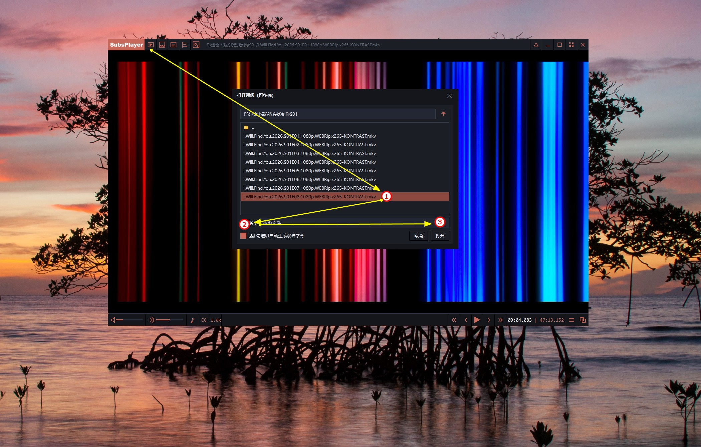
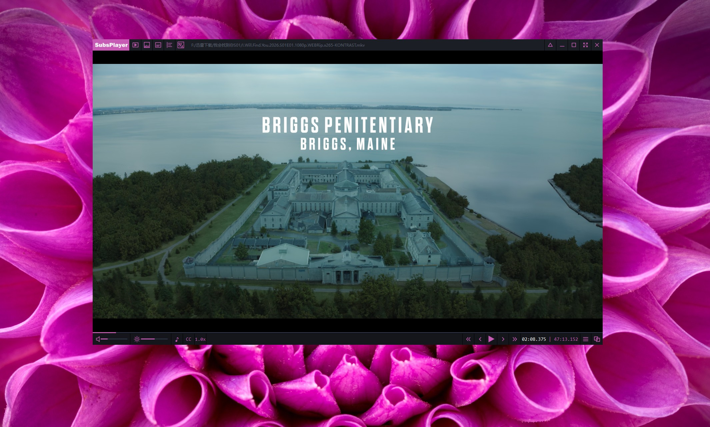
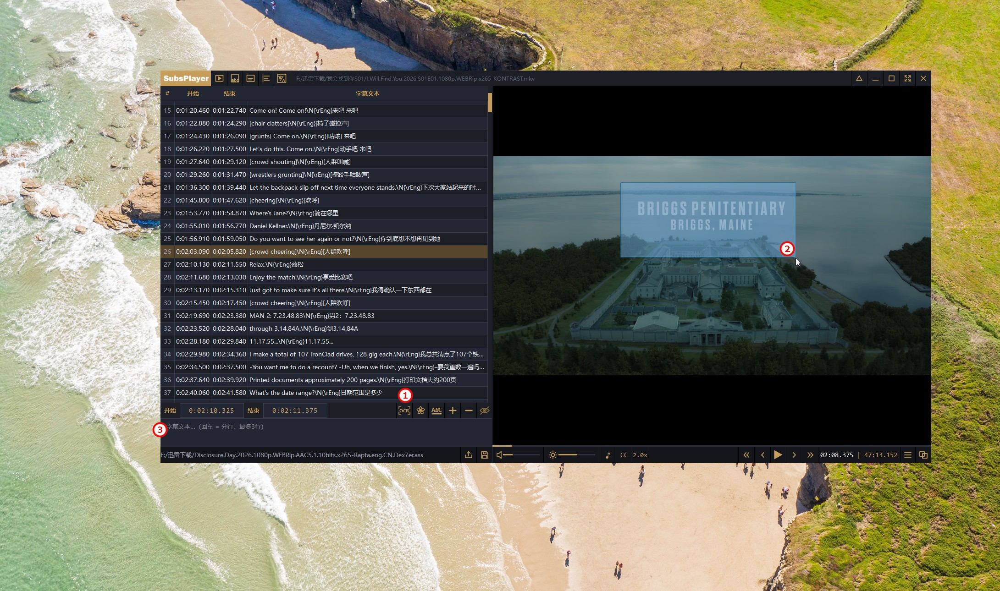
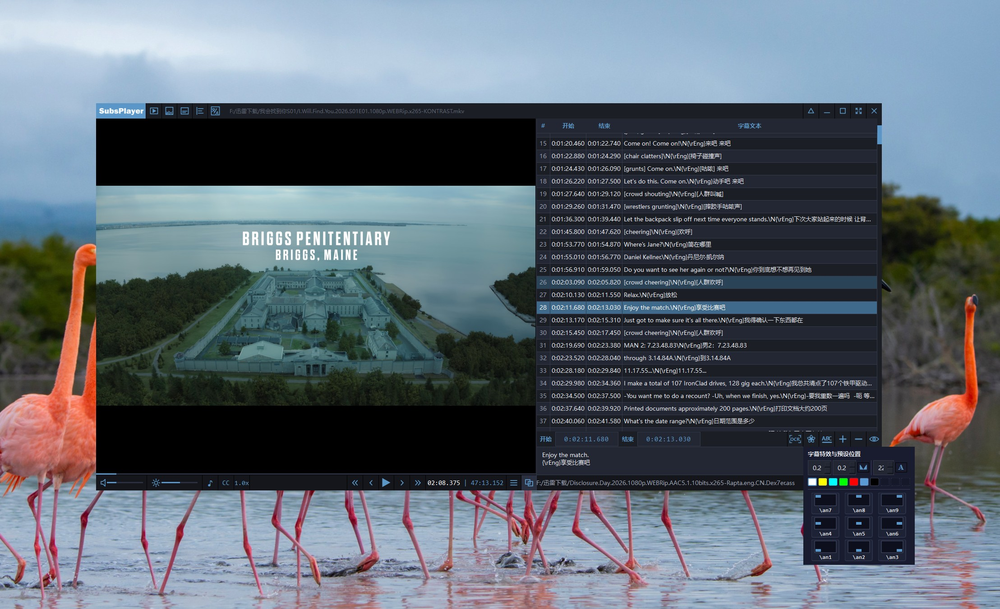

SubsPlayer V1.0.0 正式版发布 · 支持 Gemini 多模型翻译引擎
一边播放 一边翻译 视频播放器 + 字幕编辑器 为双语字幕而生
一分钟自动生成双语字幕，无需四处寻找
一键完成全部双语字幕工作流，流畅直观、省时省力

自动生产字幕
没字幕很烦？
自动生成双语字幕
外语学习和追剧
不用再等待
打开视频自动提取外文字幕，AI大模型专业翻译
自定义双语ASS字幕，自动加载播放
1 2 3，再也不用四处寻找字幕文件
高清播放工具
也是一款
现代全功能
视频播放器
基于高效的 mpv 原生视听渲染内核构建，现代界面
内封字幕和音轨切换，倍速播放，快进快退，外挂字幕位置自定义
支持 4K/8K HDR 格式高帧率解码与自定义快捷键操控，帧级控制随心所欲

双语字幕编辑
提取→对齐→翻译
→编辑→OCR→特效
更是一款
双语字幕生产力工具
打通字幕制作全链路
提取字幕轨道、音频时点对齐、智能格式清洗、硬字幕框选 OCR 识别与翻译、双窗口实时编辑预览
真正的双语字幕生产力平台


智能模型翻译
只要你想得到
Gemini AI 免费模型
支持生产多种语言双语字幕
支持自定义更多顶级模型
中英 中韩 韩英 日中双语
为双语字幕而生 为分享而生
v1.0.0
适用于 64 位 Windows 系统
免费下载使用 即刻分享双语字幕
© 2026 SubsPlayer. All rights reserved.